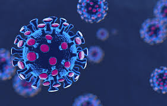

December 2019 among humans in Wuhan (China), an increasing amount of information and concerns are impacting on global mental health. Global media, local and international health organizations (including World Health Organization), epidemiologists, virologists and opinion-makers put out information, recommendations and minute-by-minute updates on COVID-19 spreading and lethality. Never-theless, the burden of this infection on the global mental health is currently neglected even if it may challenge patients, general population, as well as policy makers and health organizations and teams.
The city of Wuhan in China is in the spotlight since December 2019 because of the outbreak of a febrile respiratory syndrome due to a pneumonia caused by a new unknown coronavirus (Li et al., 2020) possibly linked to a wholesale seafood market in Huanan (Y. Chen, Liu, & Guo, 2020). Chinese health authorities have employed rapid public health measures, including intensive surveillance, epidemiological investigation and the closure of the markets on January 1, 2020 (N. Chen, Zhou, et al., 2020). Severe acute respiratory syndrome due to coronavirus (SARS-CoV), Middle Eastern Respiratory Syndrome due to coronavirus (MERS-CoV), avian influenza and other common respiratory viruses (Centers for Disease Control and Prevention, 2020) were rapidly ruled out.
 The new coronavirus (SARS-CoV-2, initially named 2019-nCoV) has been isolated from a patient in a short time on January 7, 2020, and the genome sequencing of this virus has been performed (Lu et al., 2020). The genetic sequence of SARS-CoV-2 has been officially recognized by World Health Organization (WHO) on January 12, 2020, and this has led to the development of specific polymerase chain reaction PCR-based diagnostic tests to detect the new infection in different countries (Corman et al., 2020). SARS-CoV-2, previously indicated as an unknown beta-coronavirus, is the seventh member of coronaviruses’ family which infects humans, different from both MERS-CoV and SARS-CoV, SARS-CoV-2 (Zhu et al., 2020). This outbreak is possibly related to the sale of bush meat derived from wild or captive sources in the seafood market (Cui et al., 2019). The WHO has labeled as COVID-19 this emerging respiratory disease. The first cases of this pandemic were men, less than half of them reporting had underlying diseases including diabetes, hypertension and cardiovascular disease. Common symptoms at the onset of illness were fever, cough and myalgia or fatigue. Less common symptoms were sputum production, headache, hemoptysis and diarrhea. Complications included acute respiratory distress syndrome, acute cardiac injury and secondary bacterial infection (Huang et al., 2020; Su et al., 2016; Weiss & Leibowitz, 2011). The amount of information about the new coronavirus is increasing daily and more data on transmission and its route, reservoirs, incubation period, symptoms and clinical outcomes, including survival rates, are collected around the world (Corman et al., 2020).